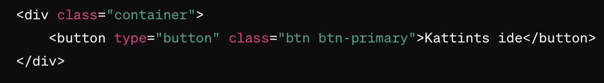
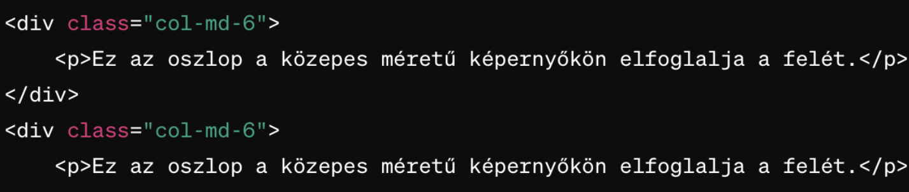
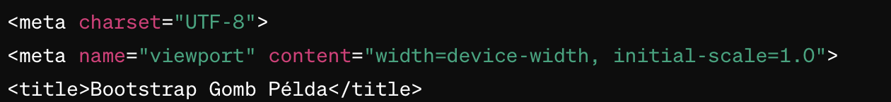
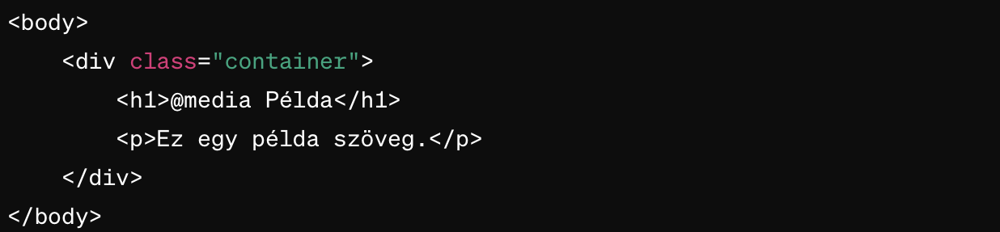
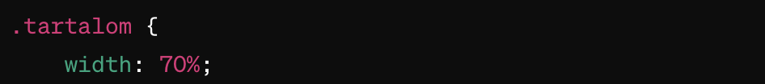
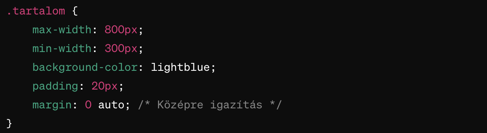
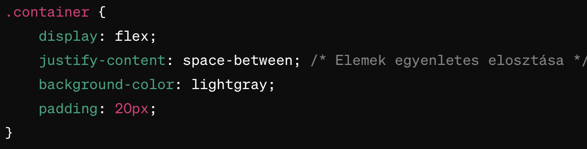

Bootstrap
Bootstrap egy ingyenes és nyílt forráskódú CSS keretrendszer, amely
segít a weboldalak gyors és könnyű kialakításában. A Bootstrap előre
definiált stílusokat, oszloprendszert, reszponzív elrendezéseket,
formatervezést, navigációt és egyéb felhasználói felületi elemeket
kínál.
Hasznos Bootstrap Parancsok:
-
container - A tartalom középre igazításához használt
alapvető Bootstrap osztály.

-
A példában a container osztályt a legfelső szintű elembe helyeztem,
ami azt jelenti, hogy az összes tartalom, beleértve a gombot is, ebben
a középre igazított tartományban helyezkedik el. Ez a gyakorlatban azt
jelenti, hogy a gomb a középen lesz elhelyezve az oldalon, nem pedig a
bal szélen.
row - Oszlopok sorozatának definiálása.-
Ebben a példában a row osztályt egy container elemen belül helyezzük
el. Ezután két oszlopot definiálunk (col-md-6), amelyek a közepes
méretű kijelzőkön egymás mellett helyezkednek el és az elrendezést
felosztják. Ez a Bootstrap segítségével könnyen létrehozható egy
egyszerű kétoszlopos elrendezés.
-
col-{size} - Oszlopok méretének beállítása a Bootstrap
oszloprendszerben.

-
Ebben a példában a container osztály a Bootstrap keretrendszer alapja,
amely a tartalmat középre igazítja és megfelelő térközt biztosít
körülötte. A row osztály a Bootstrap grid rendszerének része, és a
tartalmat egymás alá rendezheti. A col-md-6 osztályok a Bootstrap grid
rendszerében a közepes méretű (md) képernyőkön felére osztják fel a
rendelkezésre álló helyet. Ezáltal két oszlop jelenik meg egymás
mellett a közepes méretű kijelzőkön, amelyek elfoglalják a konténer
teljes szélességének felét.
btn - Gomb stílusának alkalmazása.-
Ez a kód egy egyszerű Bootstrap gombot hoz létre, amely a "Kattints
ide" szöveget tartalmazza. A gomb stílusát a Bootstrap btn és
btn-primary osztályok határozzák meg, amelyek alapértelmezett
stílusokat adnak hozzá a gombhoz, beleértve a háttérszínt és a
betűstílust is.
navbar - Navigációs sáv stílusának alkalmazása.-
Ez a kód létrehoz egy egyszerű Bootstrap navigációs sávot (navbar),
amely sötét háttérszínnel (bg-dark) és fehér szöveggel (navbar-dark)
rendelkezik. A navigációs sávban három menüpont található: "Kezdőlap",
"Rólunk" és "Kapcsolat". A navigációs menü az oldal jobb szélén
helyezkedik el (ml-auto).
Reszponzivitás
Reszponzivitás azt jelenti, hogy egy weboldal képes alkalmazkodni
különböző kijelzőméretekhez és eszközökhöz. A reszponzív tervezés
lehetővé teszi, hogy a weboldal automatikusan átrendezze, átméretezze és
újraalkossa a tartalmat annak érdekében, hogy optimális legyen minden
eszközön, például asztali számítógépeken, laptopokon, táblagépeken és
okostelefonokon egyaránt.
Hasznos Reszponzivitás Parancsok:
-
meta name="viewport" - A viewport meta tag beállítása a
reszponzív működéshez.

-
@media - Médialekérdezések használata a CSS-ben a
különböző képernyőméretekhez való alkalmazkodáshoz.

-
Ebben a példában az alapértelmezett stílusok meghatározzák a 'p' elem
alapértelmezett betűméretét és színét. A @media lekérdezés aztán újra
meghatározza a 'p' elem betűméretét (font-size) kisebb képernyőméretek
esetén (600 pixelnél kisebb). Ezzel a kóddal a szöveg kisebb lesz,
amikor a képernyő szélessége kisebb, mint 600 pixel. Ez lehetővé teszi
a jobb olvashatóságot és a tartalom jobb alkalmazkodását kisebb
képernyőméretekhez.
-
% - Százalékos méret használata az elemek méretének
relatív beállításához.

-
Ebben a példában a .tartalom osztályban a width tulajdonságot
százalékban adjuk meg (width: 70%;). Ez azt jelenti, hogy a .tartalom
div mérete 70%-ra lesz beállítva a szülőelem szélességéhez képest.
Ezzel a módszerrel a tartalom középen fog megjelenni a képernyőn,
mivel az elrendezést a Bootstrap .container osztály biztosítja a
tartalom középre igazításához.
-
max-width és min-width - A maximális és
minimális szélesség meghatározása a reszponzív elrendezésekhez.

-
Ebben a példában a .tartalom osztályban a max-width tulajdonság
beállítva 800px-ra, és a min-width tulajdonság beállítva 300px-re. Ez
azt jelenti, hogy a .tartalom div szélessége mindig legalább 300px, de
soha nem lehet nagyobb, mint 800px. A max-width és min-width
tulajdonságok segítségével határozzuk meg a tartalom rugalmas
szélességét az eltérő képernyőméretekhez való alkalmazkodás érdekében.
-
flexbox - Rugalmas elrendezés létrehozása az elemek
reszponzív elhelyezéséhez.

-
Ebben a példában a .container osztály display: flex; tulajdonságaival
a konténer egy Flexbox konténer lesz. Az justify-content:
space-between; tulajdonság segítségével az elemek egyenletesen lesznek
elosztva a konténeren belül. Minden .elem osztályú elemnek van egy fix
szélessége és magassága, valamint egy kis margó a szomszédos
elemektől. Ezáltal ezek az elemek vízszintesen helyezkednek el egy
sorban, és egyenletesen el vannak osztva a rendelkezésre álló helyen.